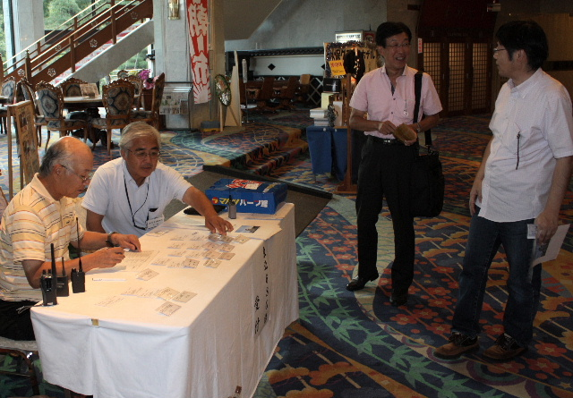
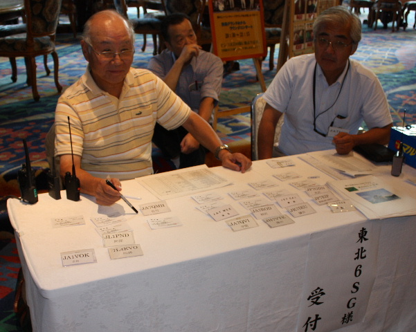
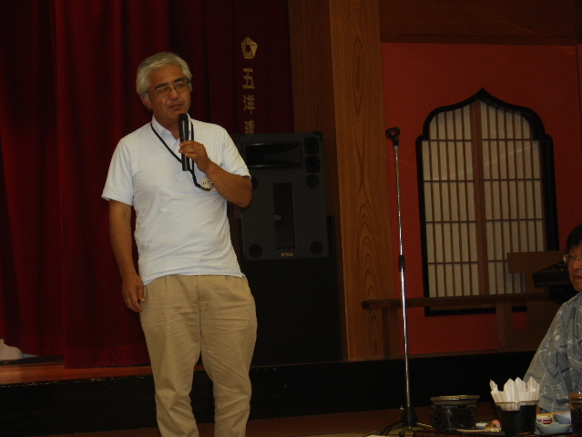
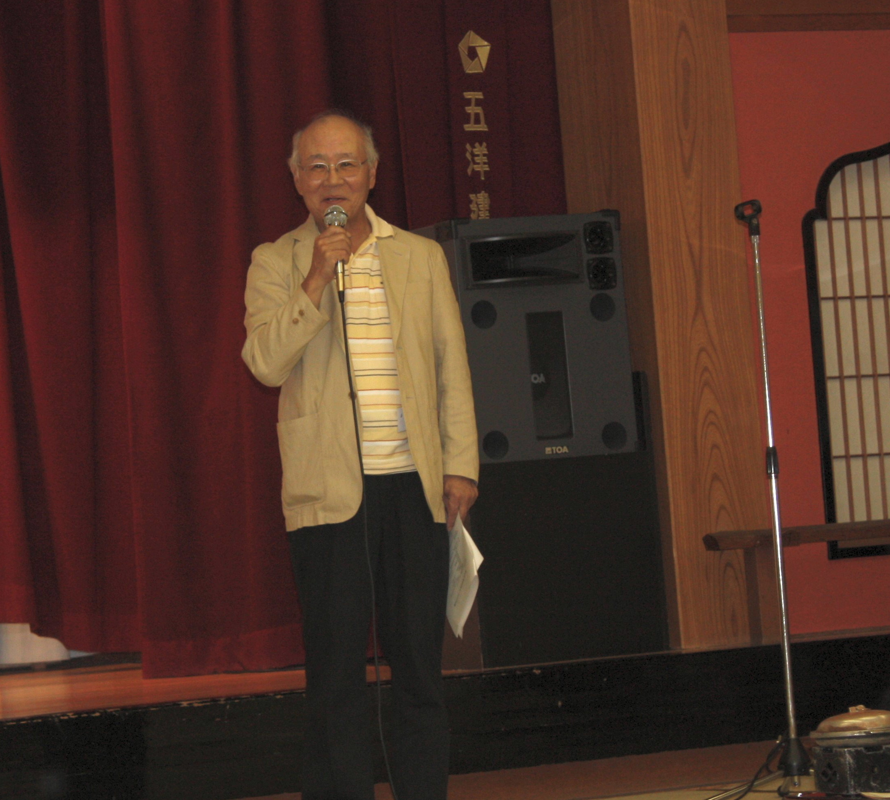
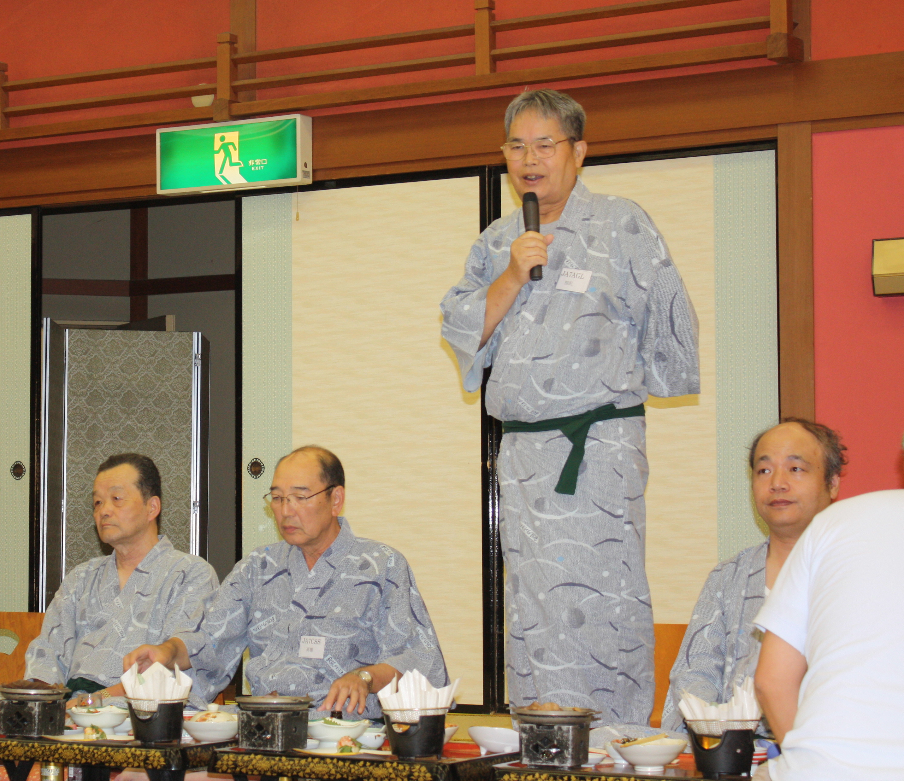
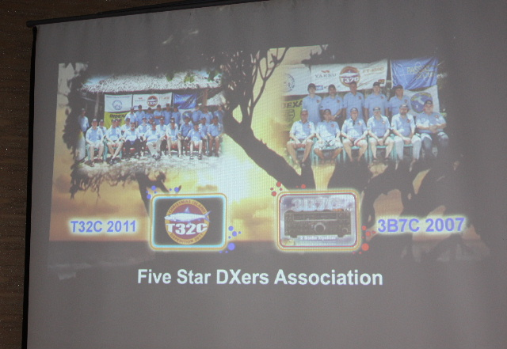
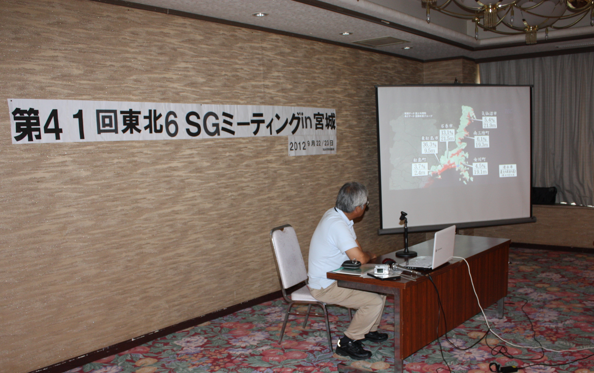
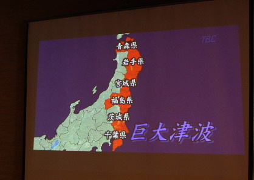
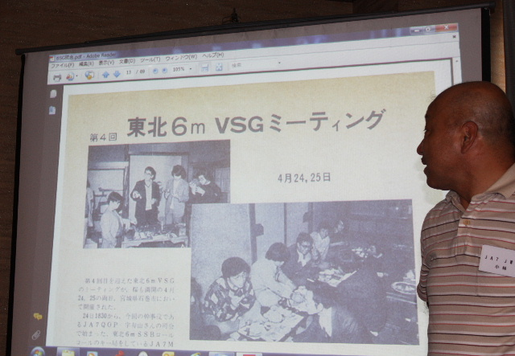
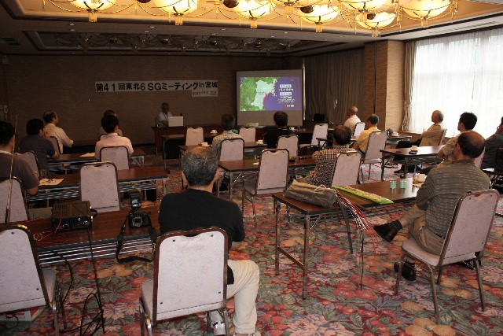

2012年 第41回東北6SG参加者
|
◎ 第41回東北6m SSB Group Meeting in 宮城(22-23.Sep.2012) 2012年の第41回東北6SGミーティング・宮城大会は、去る9月22〜23日の両日、宮城県秋保温泉の秋保グランドホテルで開催されました。 今年はサイクル24の最盛期とは言え、コンデションは6月初旬からEsのマルチホップによるヨーロッパ方面のオープンも低調に終わり、 当日の参加者の盛り上がりが気になる大会でしたが、JA1、2からの参加者を含む24局が集まりました。   東北6SG・宮城大会の受付 |
|
午後6時から始まった初日の懇親会は、JA7JWF・小林さんの司会で始まり、幹事役のJA7MIT・仁和さんの開会の挨拶に続いて、
JA7AHK・能登さんの歓迎の挨拶、各局の自己紹介と近況報告が行われました。 この手の宴会では珍しくホテルの"女将"の歓迎の挨拶まであり、2度の"乾杯"で盛り上がりました。 宴会終了後は別室で「二次会」。用意したお酒が"底を付く"深夜2時過ぎまで続いていました。 |



|
翌23日は、午前9時から講演会。最初はJA1RJU(JA7JU)・小笠原による「サイクル24の近況および今後の予想」と題しての報告が行われる予定でしたが、 低調な「サイクル24」の報告では話題が乏しいため？、昨年(2011年)英国のFSDXAのメンバー中心に、国際隊で組織された、 中部太平洋のT32C(Kiribati・キリバチ)のDX-Peditionの報告が、CDXC制作のオリジナルDVDの画面で紹介されました。 このDX-Peditionに「６m担当メンバー」の一人として参加する予定だったJA1RJUが、出発直前に体調不良で参加を取りやめると言うアクシデントで、 結果的にJAとの6mでのQSOが"ゼロ"に終わる要因となったお詫びを兼ねた運用報告となりました。 続いて、「石巻・気仙沼の震災の現状と東北6SGの歩み」と題して、地元・宮城のJA7MIT・仁和さんから、 大震災の模様が当時を記録したDVDと共に報告されました。 改めて一年半前の惨状を思い、亡くなられた"ハム仲間"の冥福をお祈りしました。  JA1RJUから「T32CのDX-Pedition」の状況をDVDで紹介/T32CのQSL
  「石巻・気仙沼の震災の現状」をDVDで紹介するJA7MIT・仁和さん
  JA7JWF・小林さんから「東北6SGの歩み」/講演会場 |
| 最後に、恒例の「ジャンク市」、続いて時期開催地の「青森」決定が報告され「6SG旗」が宮城県の幹事(JA7MIT)から青森県のJE7CAI・渡辺さんに手渡され、 予定通り定刻の12:00時に散会となりました。 |
【 第41回東北6SG参加者 】
JA1RJU(JA7JU) JA7AHK JA7ROD JH7UPW
JA1VOK JA7AGL JA7WSZ JH7VTE
JL1PND JA7CSS JE7CAI JH7WER
JO1PSX JA7JWF JF7GDN JK7IKU
7L4KVO(PND/XYL) JA7MIT JH7MQU JP7EIP
JR2HCB JA7QMH JH7MSB JA8CRB/7
********************************************************************************
宮城大会幹事・JA7MIT(仁和)・JA7AHK(能登)・JA7QVI(平間)・JA7JWF(小林)・JH7WER(佐藤)
********************************************************************************
|
|
◎ 第41回東北6m SSB Group Meeting in 宮城 東北6SGのご案内
あの東日本大震災から1年3ケ月(6月で)がたとうとしております。
昨年は第40回の山形での開催を中止しようかという声もありましたが、主催者や皆様からの熱い支援があり開催にこぎ着けました。
宮城県の太平洋岸の亘理、荒浜、石巻、志津川(南三陸)、気仙沼の津波のキズあとは、まだまだ消える事はありません。
【 東北 6SG in 宮城 】
開催日 開始日：平成24年9月22日(土) （受付開始 16:00〜）
懇親会 18:00〜 二次会 21:00〜
終了日：平成24年9月23日(日)09:00 〜12:00
講演 09:00〜 /オ−クション 11:00〜 /終了12:00
会場名:秋保グランドホテル（詳細は下記の交通アクセス地図を参照ください）
住 所:〒982-0241仙台市太白区秋保町湯元字枇杷原12-2
TEL 022-397-3131
会 費:16,000円（当日会場で徴取します）
注 意:当日キャンセルの場合は、宿泊費の実費を頂きます。
東北自動車道仙台南ICから秋保グランドホテル(所要時間約15分程度）
◆ 9月22日(土)当日の誘導については、50.300MHzを予定していますが状況により変更あり
申込み締切日:平成24年8月31日(金)まで郵便(葉書)でお願いします。
申込み先:仁和 隆司(JA7MIT)
申込住所:〒981-3202 仙台市泉区北高森7-11
連絡番号:090-2363-0584
Email:ja7mit@jarl.com もしくは下記幹事にお願いします。
尚当日はジャンク市を企画していますので各局で手持ちのジャンク等がありましたらお持ち寄りください。
* 宿泊人数に制限ありますので、早めに申込み願います。
幹事・JA7MIT(仁和 隆司)・JA7AHK(能登 功)・JA7QVI(平間 隆)・JA7JWF(小林 洋一)・JH7WER(佐藤 薫)
秋保グランドホテル・交通アクセス |